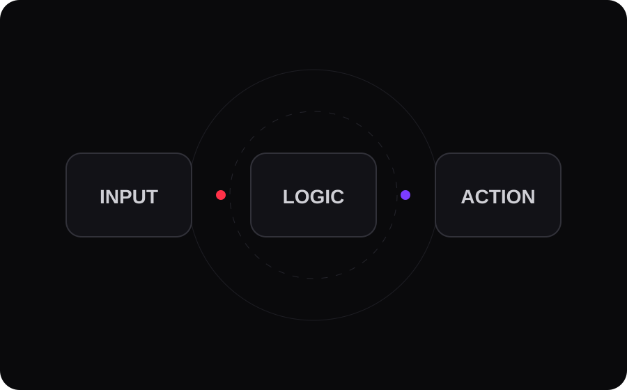

Internal system
Clear operations in one place.
Replace scattered spreadsheets with a focused view of stock, activity and status.
Digital studio · Malaysia
Akizen designs polished digital experiences and practical automation for businesses that want to look sharper and work more efficiently.
What we care about
Good design earns attention. Good systems save time. The best work does both without making things complicated.
Selected directions
Examples of the kind of digital experiences and systems Akizen can shape around a real business need.
Replace scattered spreadsheets with a focused view of stock, activity and status.

Capture, route and follow up without adding another manual step.
Clean structure. Strong visual identity. Clear next action.
Distinctive websites without the generic template feeling.
What we build
Brand-led business sites and landing pages designed to be remembered.
Connect the tools you already use and remove repetitive work between them.
Small dashboards and operational systems designed around one clear workflow.
Validate the useful part first before committing to a large build.
How we work
Find the actual problem.
Shape the clearest solution.
Ship something useful.
Have something in mind?
Website, workflow or something in between—tell us what is not working the way you want it to.
Start a conversation ↗